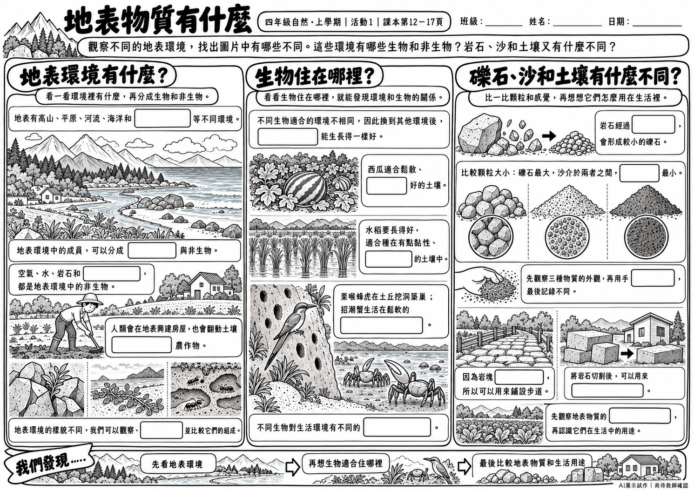
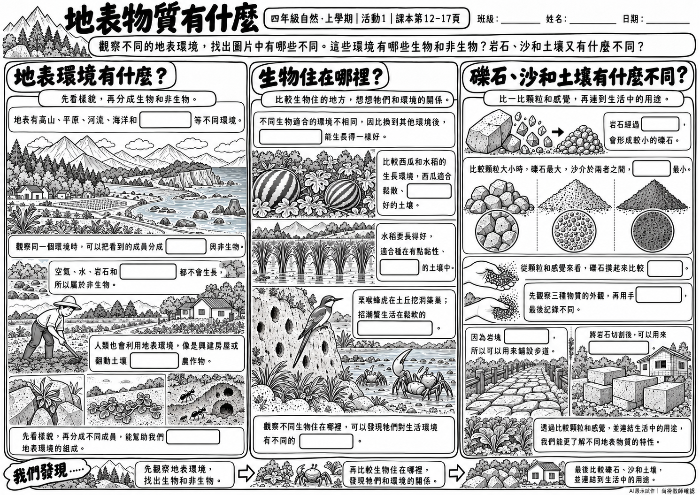
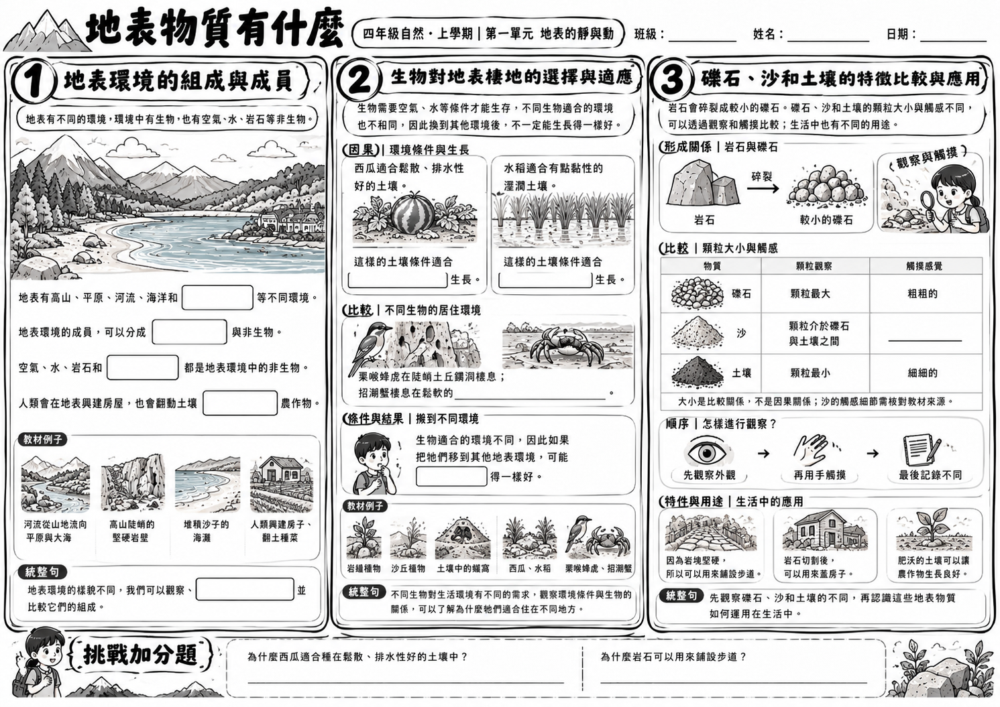
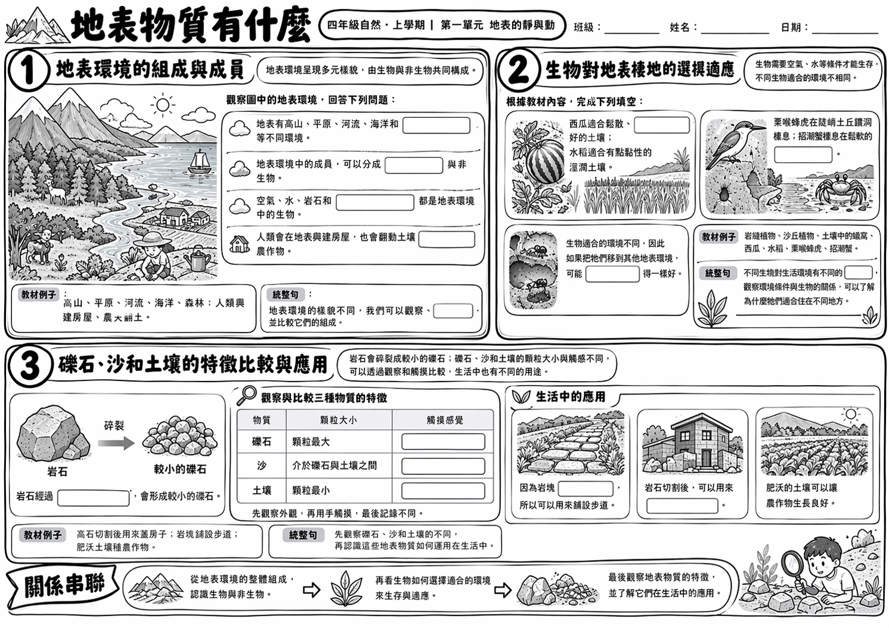

01 / 辨認與理解
基礎版
短句與明確線索，插圖幫助學生觀察。

第七關 · 圖片式成果
同一份教材，三種難度。這裡保留 ChatGPT 實際出圖，不用文字 PDF 代替。
四年級自然 · 地表物質有什麼指令要求16格，請比較實際出圖學生版不印題碼01 / 辨認與理解
短句與明確線索，插圖幫助學生觀察。

02 / 比較與連結
將概念關係放進圖像與情境，不只挖名詞。

03 / 推論與說明
整合圖像與教材線索，並保留說明理由的空間。

同一指令的另一張候選圖

下載候選二 PNG ↓遮住答案試填至少3格，檢查圖文、字句、提示與留白。教師檢核尚未執行，圖片保留 AI 原始輸出；指令要求的格數與實際結果可能不同，也可能出現提示直接透露答案的情況。學生圖確認後，再到第七關複製「同版教師答案圖」指令，用原圖編輯教師版。
一句指令版、轉譯V1／V2、原始15格回覆與三種難度文字PDF，均不覆寫。
回看文字試跑與原始差異 ↗